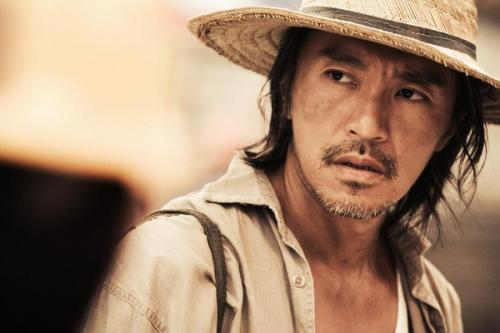
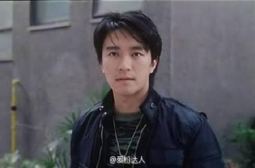
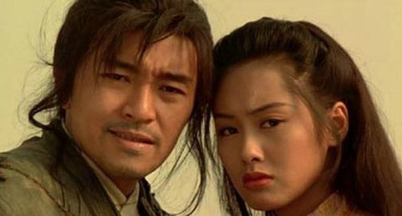

周星驰，1962年6月22日生于香港，祖籍浙江宁波，中国香港演员、导演、编剧、制作人、商人，毕业于无线电视艺员训练班。1980年成为丽的电视台的特约演员，从而进入演艺圈。1981年出演个人首部电视剧《IQ成熟时》。1988年将演艺事业的重心转向大银幕，并于同年出演电影处女作《捕风汉子》。1990年凭借喜剧片《一本漫画闯天涯》确立其无厘头的表演风格 ；同年，因其主演的喜剧动作片《赌圣》打破香港地区票房纪录而获得关注。1991年主演喜剧片《逃学威龙》，并再次打破香港地区票房纪录 。1995年凭借喜剧爱情片《大话西游》奠定其在华语影坛的地位。1999年自导自演的喜剧片《喜剧之王》获得香港电影年度票房冠军 。

2002年凭借喜剧片《少林足球》获得第21届香港电影金像奖最佳男主角奖以及最佳导演奖。2003年成为美国《时代周刊》封面人物 。2005年凭借喜剧动作片《功夫》获得第42届台湾电影金马奖最佳导演奖 。2008年自导自演的科幻喜剧片《长江7号》获得香港电影年度票房冠军 。2013年执导古装喜剧片《西游·降魔篇》，该片以2.18亿美元的票房成绩打破华语电影在全球的票房纪录 。2016年担任科幻喜剧片《美人鱼》的导演、编剧、制作人，该片以超过33亿元的票房创下中国内地电影票房纪录

《大话西游》里周星驰说过两遍的那句“曾经有一份真诚的爱情摆在我的面前，我没有珍惜，等到失去的时候才追悔莫及，人世间最痛苦的事情莫过于此。如果上天能够给我一个重新来过的机会，我会对那个女孩子说三个字：‘我爱你’。如果非要给这份爱加上一个期限，我希望是，一万年。
